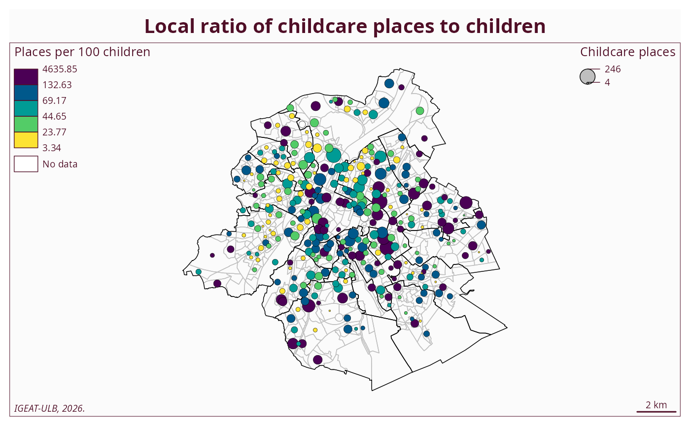
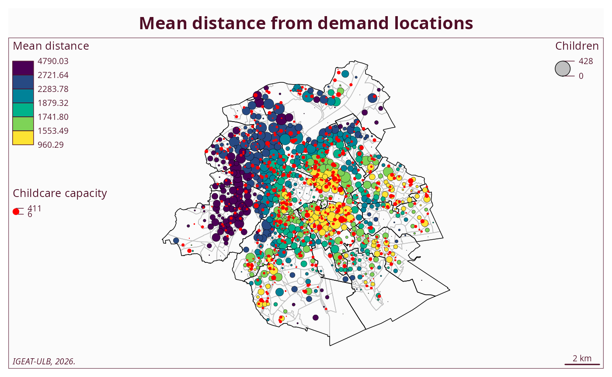

Childcare accessibility with a gravity allocation model
childcare-accessibility.RmdWhy a simple ratio map is not enough
A simple ratio map compares the number of childcare places with the number of children in each spatial unit. This is easy to read, but it assumes that demand is only served locally. This is a strong limitation, especially in dense urban areas where families may use childcare places outside their own sector.
data(ratio_map)
communes_bxl <- phacochr::phaco_data("communes_bxl")## Warning: Vous chargez les communes construites sur base des secteurs 2019-2024
## (Statbel).
mf_map(ratio_map, col = NA, border = "grey")
mf_map(communes_bxl, col = NA, border = "black", add = TRUE)
mf_map(
ratio_map,
var = c("supply_sector", "ratio"),
type = "prop_choro",
pal = "Viridis",
nbreaks = 5,
inches = 0.08,
leg_title = c("Childcare places", "Places per 100 children"),
leg_pos = c("topright", "topleft"),
border = "black",
lwd = 0.3,
add = TRUE
)## 382 '0' values are not plotted on the map.## The use of separated legends for this map type is deprecated.
## Please, use only one value for leg_pos or use mf_legend() to display two legends.
mf_layout(
title = "Local ratio of childcare places to children",
credits = "IGEAT-ULB, 2026.",
arrow = FALSE,
frame = TRUE
)
Gravity-based allocation
The gravity model allocates demand to supply according to capacity, demand and distance. The initial interaction is defined as:
distance_matrix <- distance_matrix(
supply = supply,
demand = demand,
min_distance = 400
)
allocation <- gravity(
supply = supply,
demand = demand,
distance_matrix = distance_matrix,
distance_power = 2,
max_iter = 100,
delta = 0.001,
verbose = TRUE
)## Iteration 1 | delta_row = 6463.534322## Iteration 2 | delta_row = 3105.50263## Iteration 3 | delta_row = 1607.829327## Iteration 4 | delta_row = 846.813213## Iteration 5 | delta_row = 443.634178## Iteration 6 | delta_row = 232.103526## Iteration 7 | delta_row = 121.432969## Iteration 8 | delta_row = 63.600367## Iteration 9 | delta_row = 33.342343## Iteration 10 | delta_row = 17.499022## Iteration 11 | delta_row = 9.193671## Iteration 12 | delta_row = 4.835584## Iteration 13 | delta_row = 2.54591## Iteration 14 | delta_row = 1.341994## Iteration 15 | delta_row = 0.707848## Iteration 16 | delta_row = 0.373549## Iteration 17 | delta_row = 0.197371## Iteration 18 | delta_row = 0.104421## Iteration 19 | delta_row = 0.055286## Iteration 20 | delta_row = 0.029299## Iteration 21 | delta_row = 0.015542## Iteration 22 | delta_row = 0.008252## Iteration 23 | delta_row = 0.004385## Iteration 24 | delta_row = 0.002333## Iteration 25 | delta_row = 0.001242## Iteration 26 | delta_row = 0.000662Mean distance from demand locations
sec_bxl <- phacochr::phaco_data("sec_bxl")## Warning: Vous chargez les secteurs statistique 2019-2024 (Statbel).
demand_map <- sec_bxl |>
left_join(allocation$demand, by = c("cd_sector2024" = "id"))
supply_sf <- allocation$supply |>
st_as_sf(coords = c("x", "y"), crs = 31370)
mf_map(demand_map, col = NA, border = "grey")
mf_map(communes_bxl, col = NA, border = "black", add = TRUE)
mf_map(
demand_map,
var = c("demand", "mean_distance"),
type = "prop_choro",
pal = "Viridis",
nbreaks = 6,
inches = 0.09,
leg_title = c("Children", "Mean distance"),
leg_pos = c("topright", "topleft"),
border = "black",
lwd = 0.3,
add = TRUE
)## 25 'NA' values are not plotted on the map.## The use of separated legends for this map type is deprecated.
## Please, use only one value for leg_pos or use mf_legend() to display two legends.
mf_map(
supply_sf,
type = "prop",
var = "supply",
inches = 0.04,
col = "red",
leg_title = "Childcare capacity",
leg_pos = "left",
border = NA,
add = TRUE
)
mf_layout(
title = "Mean distance from demand locations",
credits = "IGEAT-ULB, 2026.",
arrow = FALSE,
frame = TRUE
)